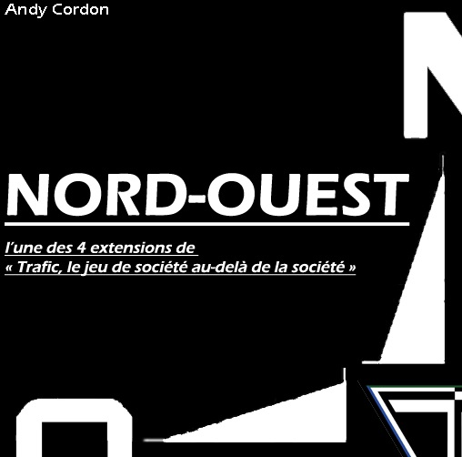

J'ai commencé à crée des petits jeux de société et au fil du temps des projets un peu plus "élaborés" Mon premier vrai projet fut un JDC, "Liber8" trop influencer par les JDC connu, 10 ans plus tard je les totalement remaniais. Mon plus gros projet "Trafic" à été tester par de nombreuses personnes et remanier au fil des années pendant près de 15 ans, il a 4 extensions et 1 complémentaire. "Trafic" a un thème hors-tout public, qui m'a inspiré "Pâques d'oeuf" qui a eu l'honneur d'être sélectionné au PEL 2015 catégorie famille. J'ai eu plein d'autres projets, mais en ce moment je remanie Icid's Home thème hors-tout public, j'ai donc créé Cid's Home.
A partir de 10 ans 2 joueurs Environ 20 minutes

Jeu de cartes de l'univers "Liber8" oppossants deux adversaires à mort. Utiliser des invocations d'entités magic, des sorts, soyez malin pour prendre l'avantage et détruire vottre opposant.
A partir de 10 ans DE 1 à 2 joueurs Environ 45 minutes
Jeu de figurines d'escarmouche de l'univers "Liber8". Directement inspirer du célébre jeu "Warhammer". Gere vos personnage à la maniere d'un RPG et découvrer l'univers de Libérate d'un point de vue Peuple de la Lumière.
A partir de 8 ans DE 2 à 4 joueurs Environ 20 minutes
Sortez votre pelle et creusé dans le cimetière à la recherche de morceaux humains pour créer de terrifiant monstre depuis votre crypte pour écraser les adversaires.
A partir de 12 ans DE 2 à 6 joueurs Environ 20 minutes par joueurs

Jeu de stratégie et négociation dans un univers de mafia. Acheter des la Drogue, des Armes et des Hummains pour les revendres plus chers, mais attention aux forces de l'odre, pour vous aidez prenez le contrôle de planque au bonus uniques et développer votre réseau de trafiquant pour réalisez tous vos désirs.
A partir de 12 ans + 1 joueur Environ 20 minutes par joueurs
L'une des 4 extensions de "Trafic", elle permet d'ajouter un joueur, de nouveaux désirs, trafics, planques et une parcelle de plateau pour agrandir la ville.
A partir de 12 ans + 1 joueur Environ 20 minutes par joueurs
L'une des 4 extensions de "Trafic", elle permet d'ajouter un joueur, de nouveaux désirs, trafics, planques et une parcelle de plateau pour agrandir la ville.
A partir de 12 ans + 1 joueur Environ 20 minutes par joueurs
L'une des 4 extensions de "Trafic", elle permet d'ajouter un joueur, de nouveaux désirs, trafics, planques et une parcelle de plateau pour agrandir la ville.
A partir de 12 ans + 1 joueur Environ 20 minutes par joueurs
L'une des 4 extensions de "Trafic", elle permet d'ajouter un joueur, de nouveaux désirs, trafics, planques et une parcelle de plateau pour agrandir la ville.
A partir de 12 ans + 4 joueurs Environ 20 minutes par joueurs
La dernière extension de "Trafic", elle nécessite de posséder les 4 autres extensions. Permet de jouer jusqu'à 14, de nouveaux désirs de type diamant, des nouvelles planques, trafic et des billets de 50 000.
A partir de 5 ans DE 2 à 4 joueurs Environ 20 minutes

Jeu de placement et de tactique dans un univers de poulailler et de Pâques, avec vos rongeurs attrapé les oeufs, faite vous des passes, tacles, afin de les donnés aux lapins de Pâques.
A partir de 10 ans DE 2 à 9 joueurs Environ minutes

Jeu d'anticipation de survie à rôle secret dans un univers de tueur en série accueillant un triangle amoureux. Soyez le tueur qui traque, ou l'un des survivant avec une capacité unique
A partir de 5 ans DE 2 à 9 joueurs Environ 20 minutes
Jeu d'anticipation sur le principe du Chat glacé qui ce passe dans une maison pendant un anniversaire d'enfant. Dans ce jeu évolutif, ajouter peut à peu du matériel pour le rendre complet
A partir de 12 ans DE 2 à 10 joueurs Environ 30 minutes

Jeu de guerre de stratégie opposant 2 équipes de 5 soldats, armes, équipement et atout sont de mises, soyez discret pour prendre l'avantage et ne pas révéler votre position.
A partir de 10 ans DE 2 à 5 joueurs Environ 20 minutes

Sur une planète condamnée par des chutes de météorite, soyez le dernier Alien à survivre parmi les autres, mangé, déplacez-vous, récupérer des matériaux pour construire des abris.
A partir de 12 ans DE 4 à 9 joueurs Environ 60 minutes
Un accusé, une victime et une cause, bienvenu au tribunal, dans ce jeu d'improvisation théâtrale soyez éloquent via une situation loufoque générer aléatoirement. Ce jeu à été adapter à la gamme de la maison "Le droit de perdre".
A partir de 8 ans DE 2 à 5 joueurs Environ 20 minutes
Partez en fôret rechercher des truffes, explorer, faite appelle a votre chien ou cochon et creuser, soyez celui qui en possedera le plus avant la fin de la saison.